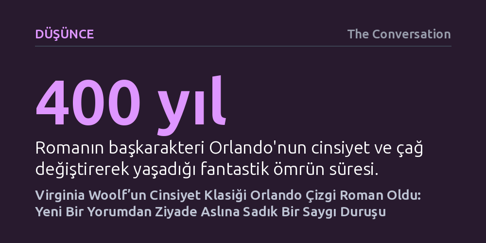

DUSUNCE · The Conversation · 2026-10-22
Virginia Woolf’un 1928 tarihli akışkan cinsiyet klasiği Orlando, Susanne Kuhlendahl tarafından çizgi romana uyarlandı. Eser yeni bir yorum getiremese de Woolf’un suçluluk barındırmayan kuir neşesini ve cinsiyet esnekliğini başarıyla özetliyor.
Bugün hararetle tartışılan akışkan cinsiyet ve trans kimlik kavramlarının güncel birer heves değil, neredeyse bir asır önce Virginia Woolf tarafından hiçbir utanç ya da kaygı duyulmadan neşeyle savunulmuş köklü bir özgürlük olduğunu hatırlatıyor.

Virginia Woolf'un 1928 yılında yayımladığı Orlando, İngiliz edebiyatının en sıradışı ve cüretkar metinlerinden biridir. On altıncı yüzyılda genç bir soylu erkek olarak başlayan hikaye, dört yüz yıla yayılan bir serüvenin ardından karakterin bir sabah kadın bedeninde uyanışıyla devam eder. Zamanın ve biyolojik sınırların ötesine geçen bu anlatı, Alman çizer ve yazar Susanne Kuhlendahl tarafından iki yüz sayfayı aşkın renkli bir çizgi romana dönüştürüldü. Eser, Woolf’un aristokrat sevgilisi Vita Sackville-West ile yaşadığı aşktan ilham alan o büyüleyici ruhu görsel bir dille günümüze taşıyor.
Kuhlendahl'ın çizimleri, Kraliçe I. Elizabeth'in sarayından Sultan IV. Mehmet'in İstanbul'una, oradan Victoria dönemi İngiltere'sinin kasvetli ahlakçılığına ve nihayet 1928'in modern Londra'sına uzanan baş döndürücü yolculuğu takip ediyor. Çizgi roman, orijinal metnin dilinden parçaları sayfalara serpiştirirken geleneksel çizgi roman panellerinin dışına taşan taşkın ve enerjik kompozisyonlar kullanıyor. Böylece Sackville-West'in oğlunun ifadesiyle "edebiyat tarihinin en uzun ve en büyüleyici aşk mektubu" olarak anılan klasik, yeni kuşak okurlar için görsel bir şölene evriliyor.
Hem Woolf'un özgün romanı hem de bu yeni görsel uyarlama, fantastik olay örgüsü için okura herhangi bir mantıksal açıklama sunma zahmetine girmez. Karakterin dört asır boyunca neredeyse hiç yaşlanmaması veya bir gecede cinsiyet değiştirmesi, ne Orlando'yu ne de etrafındaki insanları derin bir dehşete ya da varoluşsal krize sürükler. Gerçekçi anlatımın kurallarını tamamen askıya alan bu tutum, hikayeye benzersiz bir hafiflik ve oyunbazlık kazandırır.
Woolf, günlüğünde bu eseri bir önceki başyapıtı Deniz Feneri'nin ağır estetik yükünden ve biçimsel kaygılarından kaçmak için verdiği bir yazar tatili olarak tanımlamıştı. Bu hafiflik hissi çizgi roman boyunca da korunuyor; kahramanımız yüzyıllar boyunca şiire, aşka ve doğaya duyduğu tutkuyu kaybetmeden, dünyanın ve kendi bedeninin geçirdiği dönüşümleri büyük bir doğallıkla karşılıyor. Cinsiyet kavramının yapay sınırları, kahramanın kimliğinden hiçbir şey eksiltmeden adeta bir kostüm gibi üzerinden akıp gidiyor.
Orlando'nun günümüz okuru için en çarpıcı yönü, metnin derinliklerine sinmiş olan mutlak suçluluk ve utanç yoksunluğudur. Dönemin eşcinselliği ve cinsiyet uyumsuzluğunu trajik bir lanet veya marazi bir sapma olarak resmeden edebiyatından tamamen ayrışır. Örneğin aynı yıl, 1928'de yayımlanan Radclyffe Hall'un Yalnızlık Kuyusu adlı eserindeki dışlanmış ve acı çeken karakterlerin aksine, Woolf'un yarattığı evrende akışkan cinsiyet bir zenginlik ve sınırsız bir haz kaynağıdır.
Metin boyunca yaşanan dönüşüm yalnızca erkekten kadına geçişle de sınırlı kalmaz; kadın giysileri ile erkek pantolonları arasında sürekli bir geçişkenlik, gizlenen kimlikler ve her iki cinse duyulan açık çekim hikayeyi baştan sona sarar. Woolf, cinsiyet rollerinin toplumsal ve yapay kurgusunu ifşa ederken bireyin dünyaya bakışının sadece giydiği kıyafetler ve kendisine atfedilen toplumsal cinsiyet üzerinden nasıl radikal biçimde değiştiğini gösterir. Bu yaklaşım, Orlando'yu günümüzün non-binary ve trans tartışmalarından çok önce şekillenmiş devrimci bir neşe manifestosu haline getirir.
Kuhlendahl'ın çalışması son yıllarda yükselişe geçen kuir çizgi roman dalgasının doğal bir uzantısı olarak beliriyor. Eser; tiyatro, bale, Fendi moda koleksiyonları ve Sally Potter'ın Tilda Swinton'lı ünlü sinema filmi gibi Orlando'nun bugüne kadar girdiği sayısız biçimsel dönüşümün en yeni halkasını oluşturuyor. Çizgi roman, Woolf'un yoğun ve süslü edebi dilinden çekinen ya da metne ilk kez adım atacak okurlar için tek oturuşta tüketilebilecek son derece akıcı ve davetkar bir köprü vazifesi görüyor.
Bununla birlikte, eserin orijinal metne gösterdiği katı sadakat aynı zamanda onun en belirgin sınırını çiziyor. Uyarlama, metni görselleştirmek ve başarıyla özetlemek dışında hikayeye yeni bir felsefi derinlik, özgün bir politik yorum ya da taze bir bakış açısı katmakta yetersiz kalıyor. Dolayısıyla bağımsız bir başyapıt olmaktan ziyade aslına yönlendiren saygılı bir kılavuz niteliğinde duruyor. Yine de trans haklarına yönelik baskıların ve muhafazakar tepkilerin dünya genelinde yeniden sertleştiği günümüzde, Orlando'nun yüz yıl öncesinden yankılanan ve hiçbir özür dilemeyen yaşama sevinci, özgürleştirici gücünü korumaya devam ediyor.